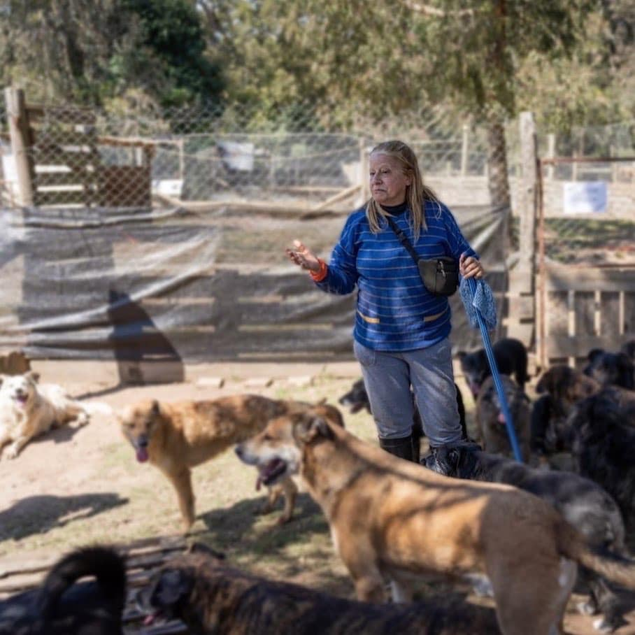

Nuestro Refugio
PGA fue fundado hace más de 15 años por nuestra Directora Beatriz Mato y hoy tenemos más de 340 peludos a nuestro cuidado, estamos ubicados en Pajas Blancas, Montevideo, Uruguay. El Refugio cuenta con un predio cercado, conformado por caniles los cuales están techados y tienen casitas con almohadones para que cada peludo tenga un espacio propio donde dormir y esté protegido tanto del sol como de la lluvia, tambien contamos con espacio de campo y cañada totalemte cercada para que ellos puedan tener la mejor calidad de vida sintiendose lo mas libres posible. Apuntamos a tener a todos los animales sueltos, sociabilizando constantemente, para que ellos puedan hacer lo que sientan por lo cual trabajamos dia a dia para lograr una buena convivencia. Tenemos por finalidad proteger a caninos de la situacion de abandono, procurarles familias y sensibilizar a la sociedad sobre la tenencia responsable y el bienestar animal. Los animales que ingresamos, son protegidos, cuidados, castrados y desparasitados. Les brindamos atencion veterinaria permanente, asi como tambien el tiempo y espacio que ellos requieren. Como ultimo fin siempre nos planteamos la obtencion de un hogar para que la vida del refugio no sea la unica que conozcan. Para cumplir nuestra mision tenemos 8 funcionarios que rotan para cubrir las 24 horas del dia los 365 dias del año. Tambien contamos con apoyo del voluntariado, pilar fundamental de nuestra ONG. No contamos con ayuda estatal, ni exoneracion o tarifas diferenciales por lo que nuestros ingresos son en su totalidad proveniente de donaciones. Por lo que los invitamos a seguirnos, acompañarnos y emprender esta lucha juntos.
La Directora
Beatriz Mato es Veterinaria y ex docente de la Udelar, hace más de 15 años atras fundaba la organización sin fines de lucro Perros y Gatos en Adopción (PGA). Durante todos estos años ella transforma vidas, da segundas oportunidades, consciente, mima y atiende a los peludos que fueron llegando y siguen llegando a su vida y a la vida de PGA. Basta con verla en el Refugio, rodeada de sus hijos perrunos que la siguen a todos lados para darse cuenta del amor enorme que ella tiene para con ellos y la dedicación absoluta que les brinda. Es por eso que para La Directora no hay días de descanso, no hay horas de descanso, casi nunca hay vacaciones ni tampoco tiempo libre, ella está siempre por y para ellos, a la hora que sea, el día que sea.
Voluntarios
En PGA nuestro objetivo como voluntarios es brindar a los animales una óptima calidad de vida durante su estancia aqui, a través de la debida atención y satisfacción de sus necesidades tanto físicas como afectivas y trabajando para mejorar las posibilidades de adopción y la futura integración en su nueva familia. Con tu ayuda podemos lograr un gran cambio, veni a aportar tu granito de arena, juntos podemos lograr grandes cosas. Para conocer como es la experiencia de primera mano les preguntamos a nuestros voluntarios :